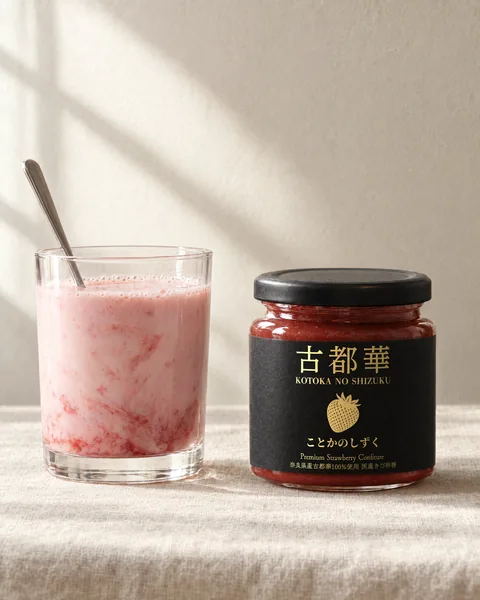
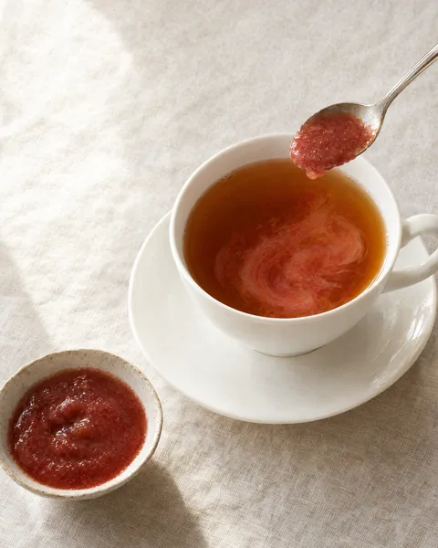
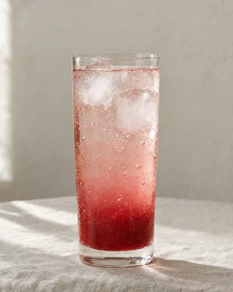
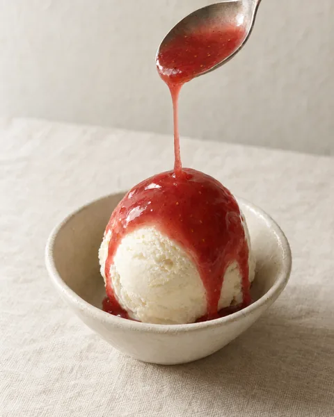
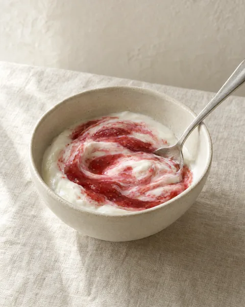
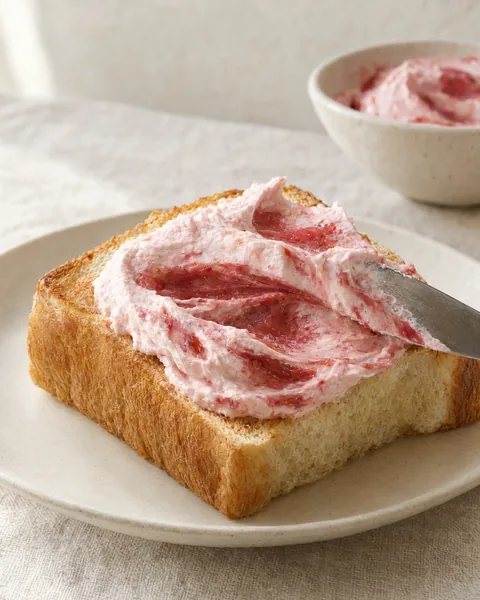

いちごミルク
牛乳に古都華のしずくを混ぜるだけです。

- 材料
- 古都華のしずく、冷たい牛乳（古都華のしずくの4〜5倍）
- つくり方
- グラスに古都華のしずくを入れ、冷たい牛乳を注いでよく混ぜます。
いちごミルクなどの飲みものから、デザート、パン、料理まで、古都華のしずくを使った20品のレシピをご紹介します。
まず試したい3品
分量は目安です。分量を書いていないものは、お好みの量でつくってください。
牛乳に古都華のしずくを混ぜるだけです。

抹茶ミルクに古都華のしずくを合わせます。
温かい紅茶に古都華のしずくを溶かします。

古都華のしずくを炭酸水で割ります。

つくり手のおすすめです。

プレーンヨーグルトに古都華のしずくとグラノーラをのせます。朝食にも使えます。

できあがったパンナコッタに古都華のしずくをかけます。
レアチーズケーキに古都華のしずくでつくったソースを添えます。
泡立てた生クリームに古都華のしずくを混ぜて、パンに塗ります。

焼いたバゲットにクリームチーズと古都華のしずくをのせます。朝食や来客時の軽い一皿に使えます。
温めたスコーンにクロテッドクリームと古都華のしずくを重ねます。
バターを塗ったクラッカーに古都華のしずくを少しのせます。
マスカルポーネに古都華のしずくを軽く混ぜて、クラッカーや果物に添えるディップにします。
カマンベールやブルーチーズに古都華のしずくを添えます。
焼き上げた鴨や豚のローストに添えるソースです。赤ワインとバルサミコ酢を煮詰め、古都華のしずくを加えます。
生ハムとチーズに古都華のしずくを少し添えます。手軽につくれる前菜です。
ビネガーとオリーブオイルに古都華のしずくを加えた、葉野菜やチーズにかけるドレッシングです。
カレーの仕上げに古都華のしずくを少し加えます。甘みと酸味を少し足したいときに使えます。
白あんに古都華のしずくを混ぜて、求肥で包む和菓子です。
味噌だれに古都華のしずくを混ぜて、焼きおにぎりに塗ります。
奈良県産のいちご「古都華」でつくったコンフィチュールです。原料のいちごは、すべて奈良県産の古都華です。内容量は1瓶180gです。